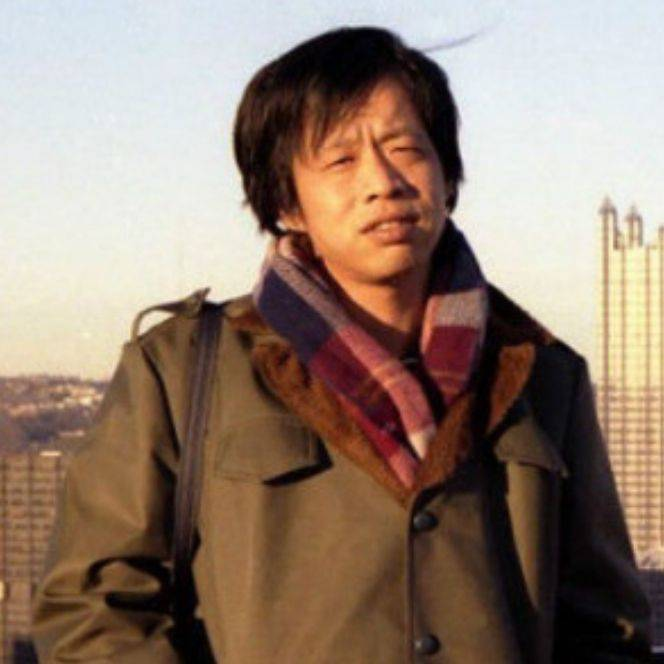

王小波
中国当代学者、作家、程序员王小波（1952年5月13日—1997年4月11日），男，中国当代学者、作家。代表作品有《黄金时代》《白银时代》《青铜时代》《黑铁时代》等。 [1] 生于北京，先后当过知青、民办教师、工人。1978年考入中国人民大学，1980年王小波与李银河结婚，同年发表处女作《地久天长》。1984年赴美匹兹堡大学东亚研究中心求学，2年后获得硕士学位。在美留学期间，游历了美国各地，并利用1986年暑假游历了西欧诸国。1988年回国，先后在北京大学，中国人民大学任教。1992年9月辞去教职，做自由撰稿人。他的唯一一部电影剧本《东宫西宫》获阿根廷国际电影节最佳编剧奖，并且入围1997年戛纳国际电影节。1997年4月11日病逝于北京，年仅45岁。
代表作黄金时代
家庭背景王小波的父亲王方名原籍四川省渠县，云南兵团工人，母亲宋华原籍山东省牟平县，在延安当工人。王小波在全家五个孩子中排行老四，在男孩中排行老二；大姐王小芹，二姐王征，兄王小平，弟王晨光。 [4] 外甥姚勇，是一名摇滚青年、国内3D引擎架构师。婚姻生活王小波和妻子李银河王小波和妻子李银河1977年，与在《光明日报》做编辑的李银河相识并恋爱。 1980年1月21日，和李银河登记结婚。 在美留学期间，与李银河驱车万里，游历了美国各地，并利用1986年暑假游历了西欧诸国。